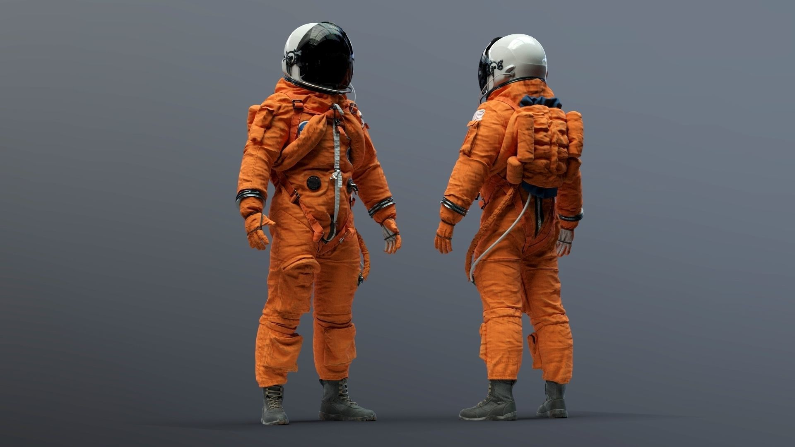

Deeper Space
Technology required
The more and more we learn about space the more we see how space effects our bodies. In a
article produced by NASA, the effects of space on the human body are outlined. For example, in
a new study, NASA looked at how gravitational fields affect things like one’s hand eye
coordination, locomotion, balance and even leading to future health concerns such as
osteoporosis. NASA is running tests on new equipment that they plan to implement in their
new suit technology which will in turn limit the effects of space travel on the astronauts.
Extensive tests have been done and without these new technological advances the plans to
explore more of the universe will never come to fruition. Another aspect of space travel that
has been studied is the environment of the spacecraft and how it changes from being docked
on earth to moving through the galaxy.NASA has discovered that microbes change
characteristics in space and these changes directly alter things like stress hormone levels,
allergen response and immune system strength. These nuance things that we are coming into
contact with will only be ironed out with…. You guessed it more space travel. But right now, it’s
not an efficient nor ideal practice to be sending humans into space. 
 Even still, NASA is working on numerous advances to help mitigate these effects and prepare for when sending
humans to travel space is more common. But even before the issues with how space effects the body can be focused on, the means to even move around the galaxy need to be established. Overall what this article shows is that there is a lot more to learn when talking about deep space travel and new technology is a huge part. The more and more scientists look into life beyond earth and the inner workings of space the more the questions of is living on another planet sustainable are becoming clear.
Even still, NASA is working on numerous advances to help mitigate these effects and prepare for when sending
humans to travel space is more common. But even before the issues with how space effects the body can be focused on, the means to even move around the galaxy need to be established. Overall what this article shows is that there is a lot more to learn when talking about deep space travel and new technology is a huge part. The more and more scientists look into life beyond earth and the inner workings of space the more the questions of is living on another planet sustainable are becoming clear.